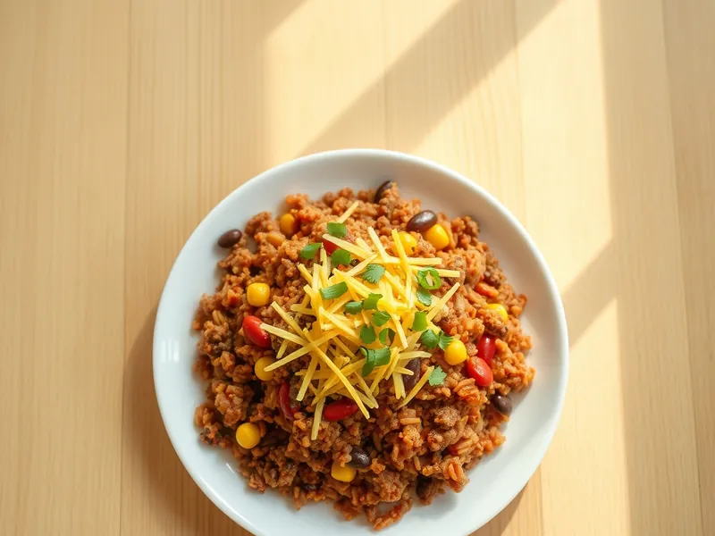

Фото: Иллюстрация ИИ, Cloudflare Workers AI
Мексиканский рис с фаршем и фасолью на сковороде
Вчерашний рис с говяжьим фаршем, фасолью, кукурузой и зирой в одной сковороде
25 мин3 порц.660 ккал на порциюБ 32 · Ж 26 · У 72Американская кухня
Открыть в приложении: порции, таймеры, список покупок
Продукты на 3 порц.
- Рис варёный (остался)400 г
- Говяжий фарш300 г
- Лук репчатый1 шт
- Фасоль консервированная1 шт
- Кукуруза консервированная150 г
- Томатная паста1 ст. л.
- Зира1 ч. л.
- Паприка1 ч. л.
- Растительное масло1 ст. л.
- Вода100 мл
- Соль1 щеп.
- Острый перец молотый по желаниюпо вкусу
- Сыр твёрдый по желаниюпо вкусу
Как готовить
- Нарежьте лук мелко, слейте жидкость с фасоли и кукурузы, 3 минуты.
- Разогрейте масло на сковороде на сильном огне, жарьте лук 2 минуты, добавьте фарш и жарьте 6-7 минут, разбивая комки, пока он не потеряет розовый цвет.
- Добавьте томатную пасту, зиру, паприку и чили, жарьте 1 минуту.
- Всыпьте фасоль, кукурузу и рис, влейте воду, посолите и перемешайте.
- Прогревайте под крышкой на среднем огне 5 минут, пока вода не впитается, а рис не станет горячим.
- Посыпьте тёртым сыром, накройте на минуту, чтобы он расплавился.
Совет. Красная фасоль подходит лучше белой. Остатки можно завернуть в тортилью и разогреть на сковороде как буррито.